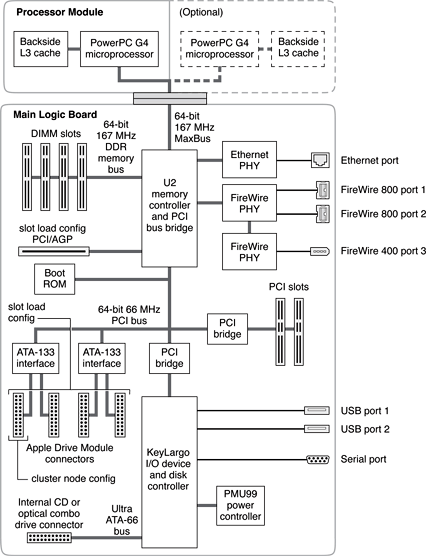

ADC Home > Documentation > Hardware > Xserve > Architecture


Block Diagram and Buses
Figure 2-1 is a simplified block diagram of the Xserve computer.
The diagram shows the main ICs and the buses that connect them together.
The architecture of Xserve is based on one or two PowerPC
G4 microprocessors and two custom ICs: the U2 memory controller
and bus bridge, and the KeyLargo I/O controller.
Figure
2-1 Simplified block diagram

Xserve has the following separate buses, not counting the
processor’s dedicated interface to the backside cache.
- Processor
bus: 167 MHz, 64-bit bus (known as the MaxBus) connecting a processor module
with one or two microprocessors to the U2 IC
- Memory bus: 167 MHz double data rate (DDR), 64-bit bus connecting
the main memory to the U2 IC.
- PCI buses: 66 MHz, 64-bit main PCI bus connecting the PCI
card slots through a PCI-to-PCI bridge to the boot ROM, to the ATA-100
disk drive interfaces, and through another PCI-to-PCI bridge to
the KeyLargo I/O controller.
- AGP/PCI combination bus: slot load configuration only —
either 4X AGP bus for a graphics card or a 66 MHz (only) 32-bit
PCI bus connected to the U2 IC
- Ultra ATA bus: ATA-capable bus connecting the internal CD
drive to the KeyLargo I/O controller IC.
- Hard disk bus: ATA-133 connected independently to each drive.
The remainder of this chapter describes the architecture in
three sections centered around the processor module, the U2 memory
controller and bridge IC, and the KeyLargo I/O controller IC.
© 2003 Apple Computer, Inc. (Last Updated April 22, 2003)